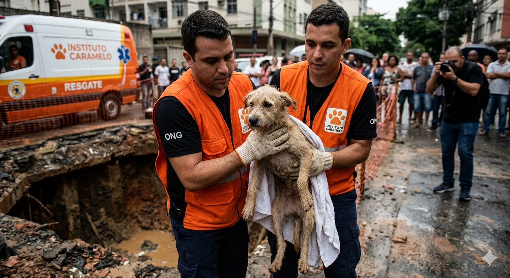
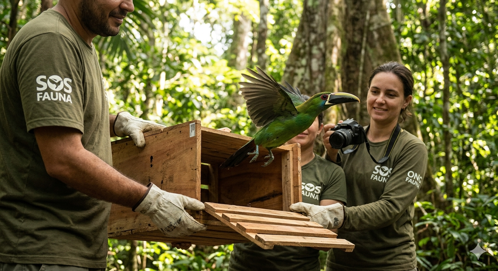

Página Inicial | Campanhas | ONGs | Leis | Sobre o Projeto
| Tipo de Ação | Descrição |
|---|---|
| AMPARA Animal | É uma das maiores organizações de proteção animal do Brasil. Ao contrário de um abrigo comum, a AMPARA funciona como uma "ONG mãe", gerando recursos e visibilidade para diversos protetores. Seu foco principal é a conscientização e prevenção, trabalhando com campanhas educativas, programas de castração em massa e projetos que ensinam o respeito aos animais desde a infância. |
| Instituto Caramelo (antigo Instituto Luisa Mell) | Esta ONG é referência nacional no resgate de animais feridos ou vítimas de grandes tragédias e maus-tratos severos. Eles mantêm um abrigo com centenas de cães e gatos, oferecendo tratamento veterinário de ponta e reabilitação psicológica. A organização é muito conhecida por sua força nas redes sociais, utilizando a exposição digital para pressionar por justiça e promover feiras de adoção responsável. |
| SOS Fauna | Diferente das ONGs focadas em cães e gatos, a SOS Fauna dedica-se exclusivamente à conservação da fauna silvestre brasileira. O foco deles é o combate ao tráfico de animais, trabalhando em conjunto com órgãos de fiscalização para resgatar bichos retirados ilegalmente da natureza. Além da repressão ao crime, eles atuam na reabilitação e soltura desses animais em seus habitats de origem. |

